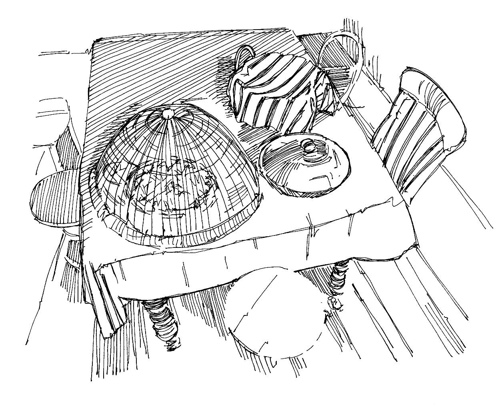

Los alimentos pueden transportar o producir gérmenes que propagan enfermedades y enferman a las personas.
Los gérmenes en alimentos que no están limpios o que no están cubiertos pueden ayudar a diseminar enfermedades diarreicas (incluyendo el cólera) y otras enfermedades tales como hepatitis, tifoidea y ántrax.
Lo que necesita saber
Los alimentos que no están limpios, cubiertos y bien cocidos pueden contener gérmenes que causen que las personas se enfermen.
Las personas de la comunidad pueden no saber o entender cómo se pueden contaminar los alimentos o cómo se puede propagar una enfermedad a través de los alimentos. Es importante explicar la importancia de una buena higiene de los alimentos para que las personas puedan protegerse a sí mismas y a sus familias para que no se enfermen.
Higiene alimentaria
Lave sus manos con jabón o ceniza antes de preparar la comida.
Cocine bien todos los productos animales , incluyendo carne y huevos, para matar los gérmenes. Asegúrese de que los productos animales estén calientes todo el tiempo.
Cubra los alimentos y el agua para protegerlos de la suciedad, las moscas, otros insectos y animales.
Lave los utensilios (platos, cubiertos, etc.) con agua limpia y jabón. Use un escurridor para secar los platos.
Lave bien las verduras y frutas con agua limpia.
Si usa leña o carbón para cocinar, asegúrese de que la habitación en la que cocina esté bien ventilada.
Mensajes comunitarios
Lave sus manos con agua y jabón antes de preparar la comida y antes y después de comer.
Los alimentos cocidos siempre deben almacenarse adecuadamente y cubrirse para evitar la suciedad, las moscas, otros insectos y animales.
Todos los productos animales, incluidos la carne y los huevos, deben cocinarse bien antes de comerlos, para eliminar todos los gérmenes.
Las verduras deben cocinarse bien o lavarse bien con agua. § Las frutas y verduras crudas deben lavarse con agua limpia.

Almacene la comida adecuadamente y cúbrala con algo
Herramientas para mensajes comunitarios
Vea los siguientes mensajes de la comunidad para apoyar buena higiene alimentaria: